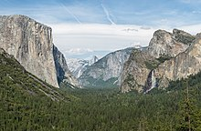

Национальный парк является природным парком используется для сохранения целей, создаваемых и
защищаемых
национальных правительствами. Часто это резерв естественных, полуестественных или освоенных земель,
которые
суверенное государство декларирует или владеет. Хотя отдельные страны по-разному обозначают свои
национальные парки, существует общая идея: сохранение «дикой природы» для потомков и как символа
национальной гордости.
Международная организация, Международный союз охраны природы (МСОП) и его Всемирная комиссия по
охраняемым
территориям (ВКОТ), определили «Национальный парк» в качестве категории II типа охраняемых
территорий .
По
данным МСОП, 6 555 национальных парков во всем мире соответствовали его критериям в 2006 году. МСОП
все
еще
обсуждает параметры определения национального парка.
Хотя этот тип национального парка предлагался ранее, Соединенные Штаты создали первый «общественный
парк
или
площадку для развлечений на благо и удовольствие людей», Йеллоустонский национальный парк , в 1872
году.
Хотя Йеллоустон официально не назывался. «национальный парк» в своем законе о создании, на практике
он
всегда назывался таковым и широко считается первым и старейшим национальным парком в мире. Однако
лесной
заповедник главного хребта Тобаго (основан в 1776 г.) и территория, окружающая гору Богд-Хан-Уул
(1778
г.),
считаются старейшими охраняемыми законом территориями , которые предшествовали Йеллоустоуну почти
на
столетие.
Национальные парки почти всегда открыты для посетителей.
Определения
В 1969 году МСОП объявил национальный парк относительно большой территорией со следующими определяющими характеристиками
- Одна или несколько экосистем, которые не претерпели существенных изменений в результате эксплуатации и занятия человека, где виды растений и животных, геоморфологические участки и среды обитания представляют особый научный, образовательный и рекреационный интерес или которые содержат природный ландшафт необычайной красоты;
- Высший компетентный орган страны предпринял шаги для предотвращения или ликвидации эксплуатации или оккупации как можно скорее на всей территории и для эффективного обеспечения соблюдения экологических, геоморфологических или эстетических особенностей, которые привели к его созданию; а также
- Посетителям разрешается вход на специальных условиях в вдохновляющих, образовательных, культурных и развлекательных целях.
В 1971 году эти критерии были дополнительно расширены, что привело к появлению более четких и определенных критериев для оценки национального парка. Это включает:
- Минимальный размер 1000 гектаров в зонах, в которых защита природы имеет приоритет.
- Законодательная правовая защита
- Бюджет и персонал, достаточный для обеспечения достаточной эффективной защиты
- Бюджет и персонал, достаточный для обеспечения достаточной эффективной защиты
Терминология
Поскольку многие страны не придерживаются определения МСОП, термин «национальный парк» может использоваться свободно. В Соединенном Королевстве и некоторых других странах, таких как Тайвань , «национальный парк» просто описывает общую территорию, которая относительно неразвита, живописна и привлекает туристов. В пределах национального парка могут быть значительные населенные пункты. И наоборот, парки, соответствующие критериям, не могут называться «национальными парками». Вместо этого могут использоваться такие термины, как «сохранить» или «зарезервировать»
Люди, живущие рядом с национальным парком, часто пропускают слово «национальный» в названии парка. Например, Национальный парк Секвойя и Национальный парк Глейшер [ неоднозначности необходимо ] , обычно называют как «Sequoia Park» и «Glacier Park» соответственно.
Ранние ссылки
В 1810 году английский поэт Уильям Вордсворт описал Озерный край как «своего рода национальное
достояние, в котором каждый человек имеет право и интересы, у которого есть глаз, чтобы увидеть,
и сердце, которым можно наслаждаться». [15] Художник Джордж Кэтлин , путешествуя по
американскому Западу , писал в 1830-х годах, что коренные американцы в Соединенных Штатах могут
быть сохранены "(с помощью какой-то великой политики правительства) ... в великолепном парке ...
. Национальный парк , в котором обитают люди и звери, во всей необузданности и свежести их
природной красоты! "
Начиная с 1735 года правительство Неаполя приняло законы для защиты природных территорий,
которые могли использоваться королевской семьей в качестве заповедника ; Прочида была первым
охраняемым участком; [17] разница между многими предыдущими королевскими охотничьими з
Первые попытки: Хот-Спрингс, Арканзас и долина Йосемити
Первая попытка федерального правительства США выделить такие охраняемые земли была предпринята 20 апреля 1832 года, когда президент Эндрю Джексон подписал закон, принятый 22-м Конгрессом США, чтобы выделить четыре участка земли вокруг того, что сейчас является Хот-Спрингс, штат Арканзас , для защиты природных, термальных источников и прилегающих горных склонов для будущего распоряжения правительством США. [19] [20] [21] Он был известен как Резервация Хот-Спрингс , но никаких юридических властей не было установлено. Федеральный контроль над территорией не был четко установлен до 1877 года. [19] Джона Мьюира сегодня называют «отцом национальных парков» из-за его работы в Йосемити. [22] Он опубликовал две влиятельные статьи в журнале The Century Magazine , которые легли в основу последующих законодательных актов. [23] [24] Президент Авраам Линкольн подписал Акт Конгресса 1 июль 1864, отдав долину Yosemite и Mariposa Grove из гигантских секвой (позднее становится Национальным парк Йосемити) в штат Калифорния. Согласно этому закону, частная собственность на землю в этом районе была невозможна. Штат Калифорния был назначен управлять парком для «общественного пользования, отдыха и отдыха». Аренда была разрешена на срок до десяти лет, и вырученные средства должны были использоваться для сохранения и улучшения. За этим первым в своем роде законопроектом последовала общественная дискуссия, и возникла острая дискуссия по поводу того, имеет ли правительство право создавать парки. Предполагаемое бесхозяйственное управление Йосемити со стороны калифорнийского штата стало причиной того, что Йеллоустон, основанный шесть лет спустя, был поставлен под национальный контроль.
Первый национальный парк в США: Йеллоустон
В 1872 году Йеллоустонский национальный парк был основан как первый национальный парк Соединенных Штатов [27], а также первый национальный парк в мире. Однако в некоторых странах Европы и Азии национальные заповедники и заповедники уже существовали, например, часть леса Фонтенбло (Франция, 1861 г.). [28] Йеллоустон был частью федеральной территории . В отсутствие правительства штата, которое могло бы взять на себя управление землей, федеральное правительство взяло на себя прямую ответственность за парк, официальный первый национальный парк Соединенных Штатов. Совместные усилия и интерес защитников природы, политиков и Северной Тихоокеанской железной дороги обеспечили принятие Конгрессом Соединенных Штатов законодательного акта о создании Йеллоустонского национального парка. Теодор Рузвельт и его группа защитников природы, Клуб Буна и Крокетта, уже были активными участниками кампании и настолько влиятельными, поскольку хорошие ораторы были крайне необходимы в эпоху, предшествовавшую развитию телекоммуникаций, оказали большое влияние на то, чтобы убедить товарищей-республиканцев и крупный бизнес поддержать законопроект. Йеллоустонский национальный парк вскоре сыграл решающую роль в сохранении этих национальных сокровищ, поскольку он страдал от рук браконьеров и других людей, которые стояли наготове грабить все, что могли, в этом районе. Теодор Рузвельт и его недавно созданный Клуб Буна и Крокетта успешно взяли на себя инициативу по защите Йеллоустонского национального парка от этого бедственного положения, в результате чего были приняты законы, направленные на сохранение природных ресурсов в Йеллоустонском и других парках, находящихся в ведении правительства. Американской Пулитцеровской премия выигрывающего автор Стегнер писал: «Национальные парки являются самой лучшей идеей мы когда - либо имели абсолютно американские, абсолютно демократичны, они отражают нас в наших силах , а не наш худшей.»
Международный рост национальных парков
Первой территорией, которая использовала термин «национальный парк» в своем законодательстве о создании, был национальный парк Макинак в США в 1875 году (позже этот район был передан в ведение штата в 1895 году, потеряв таким образом свой официальный статус «национального парка»). [30] [31] ) Следуя идее, заложенной в Йеллоустоне и Макинаке, вскоре появились парки и в других странах. В Австралии то, что сейчас является Королевским национальным парком, было основано к югу от Сиднея 26 апреля 1879 года, став вторым официальным национальным парком в мире [32]. Поскольку Макинак утратил статус национального парка, Королевский национальный парк, по некоторым соображениям, является вторым старейшим национальным парком. национальный парк в настоящее время существует. [31] [33] [34] Лаго Ковель в национальном парке Стельвио , Италия Национальный парк Банф стал первым национальным парком Канады в 1885 году. В Новой Зеландии был основан национальный парк Тонгариро в 1887 году. Вид с Гамрига на Лилиенштайн в национальном парке Саксонская Швейцария после восхода солнца В Европе первые национальные парки представляли собой набор из девяти парков в Швеции в 1909 году, за ними последовал Швейцарский национальный парк в 1914 году. Первый национальный парк в Африке был основан в 1925 году, когда Бельгийский Альберт I обозначил территорию, которая сейчас является Демократической Республикой. Конго располагалось в горах Вирунга как Национальный парк Альберта ( впоследствии переименованный в Национальный парк Вирунга ). В 1926 году правительство Южной Африки назначило Национальный парк Крюгера первым национальным парком страны, хотя это было расширение ранее существовавшего заповедника Саби, созданного в 1898 году президентом Пола Крюгера из старой Южно-Африканской Республики., в честь которого был назван парк. Аргентина стала третьей страной в Северной и Южной Америке, создавшей систему национальных парков, с созданием национального парка Науэль Уапи в 1934 году по инициативе Франсиско Морено . После Второй мировой войны национальные парки были основаны по всему миру. В 1951 году Соединенное Королевство создало свой первый национальный парк - Национальный парк Пик-Дистрикт . Это произошло после, возможно, 70 лет давления с требованием расширения доступа общественности к ландшафту. К концу десятилетия в Великобритании было выделено еще девять национальных парков. [35] В Европе некоторые 359 национальных парков , как в 2010 году [ править ] Vanoise Национальный парк в Альпах был первый французский национальный парк, созданный в 1963 году после мобилизации общественности против туристического проекта . Болото Виру в национальном парке Лахемаа перед восходом солнца В 1971 году национальный парк Лахемаа в Эстонии стал первым районом, признанным национальным парком в бывшем Советском Союзе. В 1973 году гора Килиманджаро была классифицирована как национальный парк и была открыта для общественного доступа в 1977 году [36]. В 1989 году был создан Национальный природный заповедник Джомолангма (QNNP) для защиты 3,381 миллиона гектаров на северном склоне горы Эверест в Тибетском автономном районе Китая. Этот национальный парк является первым крупным глобальным парком, в котором нет отдельных охранников и сотрудников охраны - все управление им осуществляется через существующие местные органы власти, что позволяет снизить затраты и расширить географический охват (в 1989 г., когда он был создан, он был самым крупным охраняемым парком). область в Азии). Он включает четыре из шести самых высоких гор в мире: Эверест , Лхоцзе , Макалу и Чо-Ойю.. QNNP граничит с четырьмя национальными парками Непала, создавая трансграничную охраняемую территорию, равную по размеру Швейцарии.